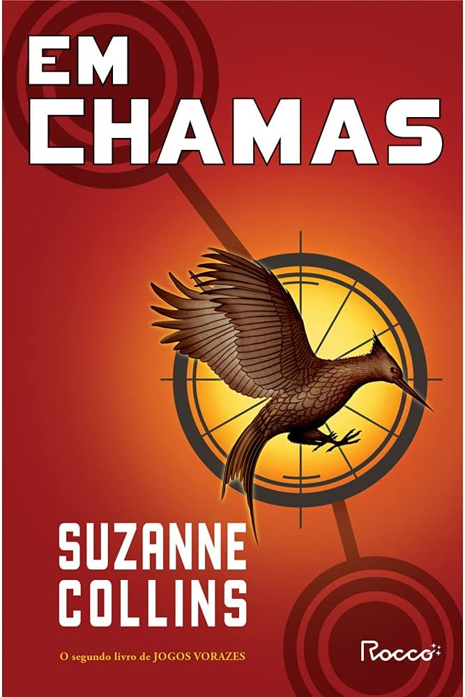
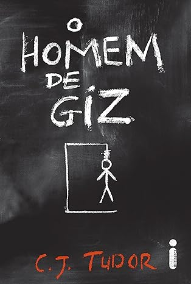
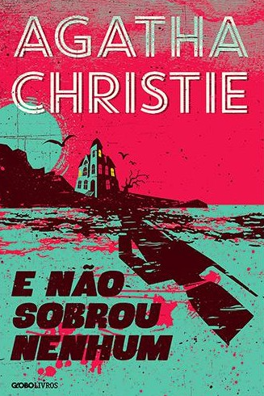
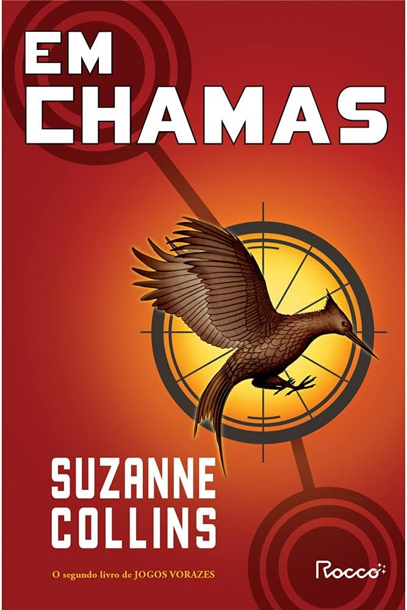
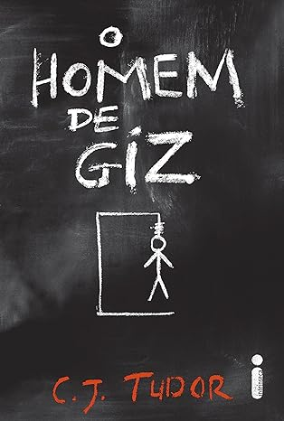
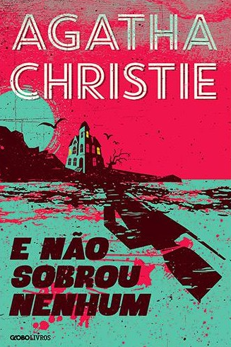

Esta obra narra a vida agitada de uma jovem pertencente a uma família numerosa. Ao mesmo tempo, apresenta a história de um homem extremamente rico que, apesar de suas conquistas materiais, experimenta uma profunda infelicidade devido à perda do movimento de seus membros. Mas ele não espera o que sentirá por essa jovem...
Neste livro, acompanhamos a jornada de dois adolescentes que enfrentam momentos desafiadores em suas vidas. Violet acaba de perder sua irmã em um trágico acidente de carro, enquanto Theodore lida com uma estrutura familiar fragilizada e é alvo de bullying na escola. No entanto, em meio a suas adversidades, surge uma história de amor única, onde Theodore se torna o apoio para Violet superar as dificuldades que a vida a impôs.
Nas páginas desta narrativa, mergulhamos na vida de uma jovem cuja mãe anseia desesperadamente por vê-la casada. Em meio a essa busca por um pretendente, ela cruza o caminho de um duque exasperado pelas investidas maternas incessantes. Surge então um pacto entre eles: fingir um relacionamento para satisfazer suas conveniências. No entanto, o que não esperavam era que esse romance fingido os levaria a uma descoberta inesperada — a paixão e o desejo que floresce entre eles.
Este romance gira em torno de Quentin Jacobsen, um estudante do ensino médio, e sua vizinha misteriosa, Margo Roth Spiegelman. Depois de uma noite de aventuras, Margo desaparece, deixando pistas para Quentin encontrá-la. A história segue a jornada de Quentin e seus amigos enquanto tentam desvendar o paradeiro de Margo.
Nesta narrativa, acompanhamos a história de uma jovem que, apesar de nunca ter vivido um namoro, expressa seus sentimentos através de cartas destinadas aos cinco meninos por quem se apaixonou. Entretanto, sua vida dá uma guinada inesperada quando sua irmã mais nova, Kitty, decide enviar essas cartas, lançando Lara Jean em uma montanha-russa emocional e virando seu mundo de cabeça para baixo.


Seu sangue é vermelho ou prateado? A partir desta pergunta que "A rainha vermelha" começa nos surpreendendo, onde uma sociedade é didivida pelos plebeus: humildes e destinados a servir (as pessoas de sangue vermelho), e a nobreza, reis e semideuses com diferetnes poderes (de sangue prateado). Mare Barrow, com sangue vermelho está destinada a servir como todos de sua linhagem, quando ela consegue um emprego em um castelo de povos prateados, e a partir daí sua vida muda drasticamente, quando descobre que na verdade sempre teve poderes, deixando todos perplexos e desencadeando guerras e conflitos. Porém a pergunta que fica para o leitor é: Como ela poderia ter poderes se seu sangue é vermelho?
Neste último livro da série de livros da Rainha Vermelha, Mare percebe que terá que dar tudo de si e pagar por um preço muito alto se quiser chegar em seus objetivos... Para que consiga chegar em seu objetivo final, a protagonista terá que ser forte para conseguir a liberdades para os "vermelhos". "Tempestade de Guerra" contará a história final de um longo processo da derrubada do governo, mas para isso, terá que enfrentar muitos desafios (e amores passados) para conseguir o que quer.
Na fazenda do Sr. Jones, alguns animais decidem se "rebelar" e se libertar se toda a opressão que viviam nessa fazenda, para que, depois, os próprios animais venham a se tornar opressores piores que os humanos. Não, esse livro não é infantil e está longe de ser... "A revolução dos bichos", se trata de uma sátira sobre a ditadura stalinista, durante a segunda guerra mundial no ano de 1945, uma obra-prima de George Orwel atemporal e a clássica obra moderna.
Neste 5º livro da saga de Harry Potter, Harry já é mais maduro e com o passar dos capítulos vai descobrindo coisas que antes não sabia sobre seu passado. Em uma de suas férias de verão, naa casa de seus tios, Harry é resgatado pelos seus amigos e levados para um lugar, com um grupo que se denomina "A Ordem da Fênix" e com integrantes bastante conhecidos pelos leitores e fãs assíduos da série. Ao desenrolar do livro, o leitor irá se aprofundar e sentir a tensão em cada capítulo acompanhando um ano letivo em Hogwarts completamente diferente dos outros, com professores novos, perigos novos e novas aventuras.
O que você faria se pudesse voltar atrás e reverter algumas escolhas ruins que vocÊ fez? Nora Seed se vê nessa situação, arrependida de muitas escolhas que fez, com muito talento mas não aproveitando eles, quando está prestes a por um final em tudo, se vê em uma biblioteca denominada "Biblioteca da Meia noite", onde ganha uma oportunidade única de reviver o passado e todas as vidas que poderia ter aproveitado, ser uma rockstar, nadadora olímpica ou qualquer coisa que poderia imaginar. Ao final de tudo o livro deixa o leitor - e Nora -, pensativos sobre o que de fato faça com que sua vida valha a pena.
 





Panem é uma nação onde ocorre anualmente o que é chamado de "Jogos Vorazes", um menino e uma menina são escolhidos para representar cada um dos 12 distritos de Panem. Katniss Everdeen é um dos escolhidos e o livro se desenrola dentro da arena onde ocorre os jogos e são televisionados para todos de Panem assistir. Katniss precisa lutar até a morte contra os outros 24 escolhidos, e se defender para que não tenha um fim trágico para que no final dos jogos, consiga dar uma vida digna para sua mãe e sua irmã que vivem no distrito 12, o mais precário, mas com o passar dos dias, encontra Peeta dentro da arena e se torna seu aliado nesses jogos até a morte, onde os dois acabam tendo que sobreviver e depender um do outro.
No segundo livro de "Jogos Vorazes", Peeta e Katniss acabam se tornando um casal para as câmeras, mas para Katniss não, e serão vigiados pelo presidente Snow por conta da ridicularização dos Jogos passados, onde ambos saíram vencedores. Angustiado por estar perto de acontecer uma guerra e uma revolução no estado de Panem, o presidente decide fazer com que o novo casal amenize as revoluções em cada distrito, mas não diminui nem um pouco. Para você que achou que os Jogos Vorazes tinha acabado, um anuncio pega todo de surpresa, e Katniss e Peeta terão que viver toda a angústia que eles passaram nos jogos novamente, como uma foram do Presidente Snow lidar com eles e por um fim em toda essa revolta causada no fim dos últimos jogos.
O que você faria se estivesse naufragado em uma ilha no oceano pacífico? Robinson Crusué sofre um naufrágio e começa a lutar pela sua sobrevivência numa ilha, tendo que sobreviver em situações de muito escasso. Por estar sozinho na ilha, começa a descobrir alguns hobbies, como marcenaria e agricultor... Se passa 2 décadas sem o protagonista ver um ser humano até que um dia ele resgata um nativo que estava sendo perseguido e o tranforma em seu criado, o livro todo se passa contando a aventura de Robinson após o naufrágio nessa ilha. E você conseguiria sobreviver em uma ilha isolada?
Uma mistura de passado e presente permeia pelas páginas de "O Homem de Giz". Esse livro, consegue prender o leitor num suspense que vai do começo ao fim, quando no ano de 1986, Eddie e seus amigos andavam de bicicleta e tinham uma marca para se comunicar entre eles, fazendo desenhos de giz que apenas eles entendiam, mas um desses desenhos os leva a algo que irá atormentar eles até o ano de 2016, quando o mesmo desenho chega nesses amigos, agora adultos, e um desses amigos morre sem deixar rastros. O livro consegue alternar entre passado e presente, fazendo com que tudo se conecte e deixa um mistério para o leitor se aprofrundar e investigar.
Quem diria que uma canção infantil iria atormentar tanto os convidados de Mr. Owen nessa ilha com uma casa grande e muitos mistérios a rondando. "E não sobrou nenhum" é um dos best-sellers de Agatha Christie, reunindo tensão, mistério e suspense. 10 pessoas são convidadas por uma pessoa anônima, todas com algo em comum: todas tinham algum peso e culpa, por ter feito algo de errado. Seguindo uma canção infantil bastante conhecida pelos 10 convidados, um por um vão tendo um final trágico assim como as letras da canção vão predizendo até que não sobra nenhum, enquanto os outros ficam intrigados para descobrir quem está por trás disso tudo, os culpados vão afunilando e as pessoas ficam sem saída.


Para você que gosta de se aventurar através dos sentimentos pessoais, Estranheirismo é uma ótima escolha. Reunindo poesia com versos delicados e belos, se aprofundando em sentimentos de amor, perda, dores e muitos temas profundos que irá atrair a atenção do leitor pelo fato de Zack Magiezi "brincar com as palavras", quebrando a 4ª parede interagindo com cada leitor de maneira diferente.
Nesta outra obra de Zack Magiezi, "Notas sobre ela" retrata fielmente o processo da mulher da infância à maturidade feminina, mergulhando no universo feminino. Desde as maiores alegrias, até os picos de solidão e ansiedade, da inocência na infância, até as expectativas quebradas, tudo prende o leitor para que se identifique com cada situação descrita nessa bela poesia.
Empoderamento feminino e amor em diferentes versos diretos, é sobre o que se trata "A princesa salva a si mesma neste livro", com o importante papel de trazer os contos de fada, à relaidade feminina no século XXI. O livro em foram de poesia, contém uma temática contemporânea, retratando sobre resliência, amor, perda, solidão e principalmente inspiração para as muitas mulheres, o livro segue a risca a combinação dos contos de fadas, com a realidade feminina. Dê uma chance ao livro que ganhou o prêmio "Goodreads Choice Awards", o prêmio de melhor leitura do ano.
Com textos curtos, que muitas vezes são frases, esta obra tem o hábito de conter textos que, de fato, requer um pouco mais de atenção e não serem lidos rapidamente. Os textos se assemelham bastante com as redes sociais que estamos acostumados a usar todos os dias, com temas familiares para todos os leitores: amor, abandono e a dor, o autor faz com que cada leitor se sinta acolhido a cada texto, faz o leitor se identificar e pensar que ele mesmo poderia ter escrito em sua própria rede social pois já passou por algo parecido. Esta obra merece uma maior atenção, e merece ser um livro que você tenha o hábito de ler antes de dormir pelo menos alguns textos.
Muitas vezes nos vemos perdidos e presos no passado, ou em algum dos momentos mais amargos de nossas vidas quando não tem mais saída da amargura e ansiedade profunda, é exatamente nisto que se prende a obra de Rupi Kaur. "Outros jeitos de usar a boca", é um livro de poemas sobre as experiêncidas de abuso, amor, perda e sobrevivência, onde cada emoção tem um lado negativo, porém este livro irá te fazer tirar algo bom em cada período difícil que se passa, fará o leitor pensar com delicadeza e pelo lado positivo das coisas.


 SPTECH
SPTECH
 (11)95030-4200
(11)95030-4200
 booksclub@sptech.school
booksclub@sptech.school